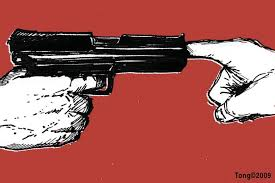

Ways To Prevent Gun Violence

-
I promise to do all I can to protect children from gun violence by encouraging and supporting solutions that create safer, healthier homes, schools and communities.
-
Then, spread the word and encourage others to make the promise on social media, in email, and any other of your online communities.
-
Start a GoFundMe Campaign. This route also takes mere minutes. Enter your details and search for Sandy Hook Promise to steer funds toward preventing school shootings and bringing gun violence prevention programs to more communities.
-
Sign a Petition to Expand Background Checks. Every moment Congress delays critical action, more children are at risk of gun violence. Get more details, and sign the petition.
Main Page